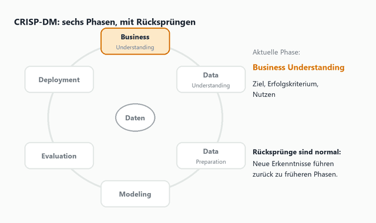
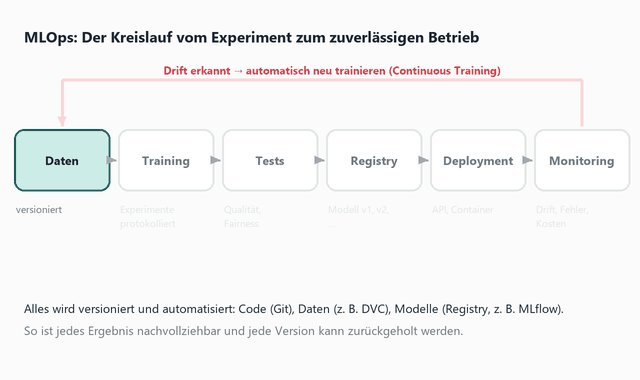
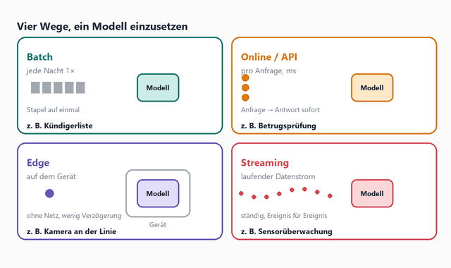
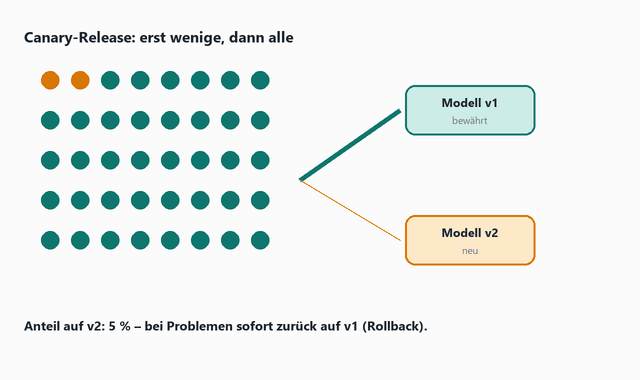
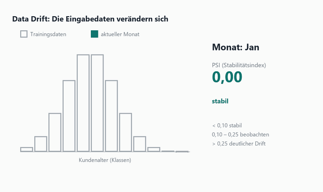
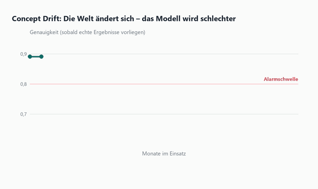

Die meisten KI-Projekte scheitern nicht am Algorithmus, sondern an unklaren Zielen, fehlenden Daten oder daran, dass ein gutes Modell nie zuverlässig in den Betrieb kommt. In diesem Modul lernen Sie das Standard-Vorgehensmodell CRISP-DM, die Rollen im Team, den Weg vom Proof of Concept zum Rollout sowie MLOps: Versionierung, Deployment, Rollout-Strategien und die Überwachung im laufenden Betrieb – mit Data Drift und Concept Drift.
Ein Haus scheitert selten daran, dass die Ziegel schlecht sind, sondern an fehlenden Plänen, falschem Baugrund oder daran, dass niemand die Nutzer gefragt hat. KI-Projekte sind ähnlich: Das Modell ist meist der kleinste Teil.
| Typischer Grund | Beispiel | Gegenmittel |
|---|---|---|
| Unklares Ziel | „Wir wollen auch etwas mit KI machen“ | messbares Geschäftsziel, Erfolgskriterium vorab |
| Fehlende oder schlechte Daten | Ausfälle nicht dokumentiert, Labels fehlen | Datenprüfung vor Projektstart |
| Kein Prozess für das Ergebnis | Prognose liegt vor, aber niemand handelt danach | Prozess und Nutzer früh einbinden |
| Prototyp bleibt Prototyp | Notebook funktioniert, Betrieb ist nicht geplant | MLOps von Anfang an mitdenken |
| Fehlende Akzeptanz | Mitarbeitende misstrauen dem System | Transparenz, Schulung, Mitbestimmung |
| Rechtliche Hürden spät erkannt | Datenschutz verbietet Nutzung | Datenschutz und AI Act zu Beginn prüfen |
| Keine Wartung | Modell veraltet unbemerkt | Monitoring und Nachtraining |
Ein Maschinenbauer will Ausfälle vorhersagen. Von 1.000 Maschinen fallen im Jahr 30 aus (3 %). Das erste Modell sagt für jede Maschine „kein Ausfall“.
Das Team berichtet stolz von 97 %. Das Geschäftsziel („Ausfälle früher erkennen“) wird aber nicht erreicht. Ursache: Das Ziel wurde nie in eine passende Kennzahl übersetzt (Modul 6). Ein klares Erfolgskriterium vorab hätte das verhindert.
Ein Großhändler entwickelt monatelang eine Absatzprognose. Sie ist genau, wird aber als Excel-Datei an die Einkäufer gemailt. Diese bestellen weiter nach Gefühl, weil sie nicht verstehen, wie die Zahlen entstehen, und weil niemand ihren Arbeitsablauf angepasst hat. Nach einem Jahr wird das Projekt eingestellt.
Lehre: Der Prozess, in dem das Ergebnis genutzt wird, gehört zum Projekt. Wer trifft welche Entscheidung mit der Prognose? Wie wird sie im Alltag angezeigt? Wer darf ihr widersprechen, und wie fließt das zurück?
| Wunsch | Besser formuliert |
|---|---|
| „Wir wollen den Kundenservice mit KI verbessern.“ | „Bis 30.09. sinkt die mittlere Erstantwortzeit auf E-Mails von 12 auf 4 Stunden; mindestens 70 % der Entwürfe werden ohne größere Änderung übernommen.“ |
| „Weniger Ausschuss.“ | „Die Ausschussquote an Linie 3 sinkt bis Ende Q2 von 4,2 % auf 3,0 % (rund 29 % weniger); das Modell erkennt mindestens 90 % der fehlerhaften Teile bei höchstens 5 % Fehlalarmen.“ |
Frage (6 Punkte): Nennen Sie drei typische Gründe, warum KI-Projekte scheitern, und je eine Gegenmaßnahme.
Musterlösung: Unklares Ziel → messbares Geschäftsziel und Erfolgskriterium vorab. Schlechte oder fehlende Daten → Datenprüfung vor Projektstart. Fehlende Akzeptanz oder kein Prozess für das Ergebnis → Nutzer und Betriebsrat früh einbinden, Schulung. (Weitere gleichwertig: Prototyp ohne Betrieb → MLOps; späte Rechtsprüfung → Datenschutz und AI Act zu Beginn; keine Wartung → Monitoring.) Je Grund mit Maßnahme 2 Punkte.
Denken Sie an ein IT-Projekt, das bei Ihnen nicht den erhofften Nutzen gebracht hat. Welcher der sieben Gründe der Tabelle trifft zu? Meist waren es Ziel und Prozess, nicht die Technik.
KI-Projekte scheitern meist an Ziel, Daten, Prozess, Betrieb und Akzeptanz – selten am Algorithmus.
Ein Rezept hat eine Reihenfolge: einkaufen, waschen, schneiden, kochen, abschmecken, servieren. Beim Abschmecken merkt man manchmal, dass etwas fehlt – und geht zurück. CRISP-DM ist so ein Rezept für Datenprojekte, mit ausdrücklich erlaubten Rücksprüngen.

| Phase | Kernfragen und Tätigkeiten | Ergebnis |
|---|---|---|
| 1 Business Understanding | Welches Problem? Wie messen wir Erfolg? Lohnt es sich? Welche Risiken und Vorgaben? | Projektziel, Erfolgskriterien, Projektplan |
| 2 Data Understanding | Welche Daten gibt es? Qualität? Erste Analysen (EDA) | Datenbericht, Qualitätsbewertung |
| 3 Data Preparation | Bereinigen, verbinden, Merkmale bilden, aufteilen | Trainingsdatensatz (oft 60–80 % des Aufwands) |
| 4 Modeling | Verfahren wählen, trainieren, Hyperparameter einstellen | Kandidaten-Modelle |
| 5 Evaluation | Technische Kennzahlen und Geschäftsziel prüfen; Prozess überprüfen | Go/No-Go-Entscheidung |
| 6 Deployment | Einführung, Überwachung, Wartung, Abschlussbericht | laufendes System, Dokumentation |
„Evaluation“ in CRISP-DM bedeutet mehr als Modellmetriken (das passiert schon in Modeling). Hier wird geprüft, ob das Geschäftsziel erreicht wird und ob das Projekt in Betrieb gehen soll. Alternativen zu CRISP-DM: KDD-Prozess, Microsoft TDSP; in der Umsetzung oft mit Scrum kombiniert.
| Phase | Was konkret geschieht |
|---|---|
| 1 Business Understanding | Ziel: Kündigungen im Tarif „Basis“ um 15 % senken. Erfolgskriterium, Budget, Datenschutz (Rechtsgrundlage) klären. |
| 2 Data Understanding | Vertragsdaten, Rechnungen, Anrufe sichten; 12 % der Kunden haben kein Kündigungsdatum eingetragen – Qualität prüfen. |
| 3 Data Preparation | Kündigungsdatum rekonstruieren, Merkmale bilden („Anrufe der letzten 90 Tage“), in Training, Validierung und Test teilen. |
| 4 Modeling | Logistische Regression als Baseline, Entscheidungsbaum und Gradient Boosting vergleichen. |
| 5 Evaluation | Recall und Precision auf dem Testdatensatz; zusätzlich: Würde die Rückholaktion bei diesem Treffer-Niveau Geld sparen? Go/No-Go. |
| 6 Deployment | Nächtlicher Batch-Lauf, Liste an den Kundenservice, Monitoring, Dokumentation. |
In Phase 2 zeigt sich, dass bei 40 % der Verträge die Kündigungsgründe fehlen, auf denen das Ziel („Kündigungen wegen Preis verhindern“) aufbaut. Das Team springt zu Phase 1 zurück und ändert das Ziel: Statt Gründe vorherzusagen, wird die Kündigung selbst prognostiziert. Ohne den Rücksprung wäre ein Modell entstanden, das nie ausreichend trainiert werden konnte.
Ein Projekt umfasst 200 Personentage:
| Phase | Personentage | Anteil |
|---|---|---|
| Business Understanding | 10 | 5 % |
| Data Understanding | 15 | 7,5 % |
| Data Preparation | 130 | 65 % |
| Modeling | 20 | 10 % |
| Evaluation | 10 | 5 % |
| Deployment | 15 | 7,5 % |
Summe 200 Tage. Bei einem Tagessatz von 600 € sind das 120.000 €, davon 130 · 600 = 78.000 € für die Datenaufbereitung. Wer nur das Modell kalkuliert, plant etwa ein Zehntel des Aufwands.
| Tätigkeit | Phase |
|---|---|
| Erfolgskriterium mit dem Fachbereich festlegen | Business Understanding |
| Fehlende Werte zählen, Histogramme anschauen | Data Understanding |
| Ausreißer behandeln, Merkmale skalieren | Data Preparation |
| Hyperparameter mit Kreuzvalidierung einstellen | Modeling |
| Entscheiden, ob das Ziel erreicht wird (Go/No-Go) | Evaluation |
| Monitoring einrichten, Abschlussbericht schreiben | Deployment |
Frage (6 Punkte): Nennen Sie die sechs Phasen von CRISP-DM und erklären Sie, warum es Rücksprünge gibt.
Musterlösung: Business Understanding, Data Understanding, Data Preparation, Modeling, Evaluation, Deployment (3 Punkte). Rücksprünge: Erkenntnisse aus späteren Phasen können frühere Annahmen widerlegen (z. B. fehlende Daten zwingen zur Zieländerung; schlechte Evaluation zwingt zu neuen Merkmalen) (3 Punkte).
Business Understanding → Data Understanding → Data Preparation → Modeling → Evaluation → Deployment; Rücksprünge sind normal.
„Ich will fitter werden“ ist ein Wunsch. „Ich will bis 30. Juni 5 km in unter 30 Minuten laufen“ ist ein Ziel, bei dem man weiß, ob man es erreicht hat. KI-Projekte brauchen Ziele der zweiten Art.
| Prüffrage vor Projektstart | Warum |
|---|---|
| Welche Entscheidung soll besser werden, und wer trifft sie? | Ohne Nutzer bleibt die Vorhersage folgenlos |
| Gibt es genug Daten mit Labels, und dürfen wir sie nutzen? | Machbarkeit, Datenschutz |
| Was ist die heutige Lösung (Baseline)? | Maßstab für Nutzen |
| Was kostet ein Fehler (FN, FP)? | Wahl der Kennzahl und Schwelle (Modul 6) |
| Welche Risikoklasse nach AI Act? | Pflichten und Aufwand (Modul 10) |
| Rechnet sich das? (Modul 11) | Go/No-Go vor großem Aufwand |
Ein verpasster Ausfall (FN) kostet 5.000 €, ein Fehlalarm (FP) kostet 200 € für eine unnötige Prüfung.
Schon bei einer Ausfallwahrscheinlichkeit von mehr als 4 % lohnt sich eine Prüfung. Die Schwelle des Modells sollte also niedrig angesetzt werden – ein hoher Recall ist wichtiger als hohe Precision.
100 Ausfälle pro Jahr zu je 5.000 € = 500.000 €. Die Baseline (Wartung nach Plan) erkennt keinen davon vorab. Das Modell erreicht Recall 80 % und Precision 50 %. Ein rechtzeitig erkannter Ausfall wird durch eine Wartung für 500 € verhindert.
Diesen Nutzen stellt man den Projektkosten gegenüber (Modul 11). Entsteht kein positiver Business Case, ist ein früher Stopp die richtige Entscheidung.
Heute erkennen erfahrene Mitarbeitende 55 % der fehlerhaften Teile. Ein Modell mit 70 % ist deutlich besser; ein Modell mit 52 % wäre schlechter als der Mensch, selbst wenn es „nach viel“ klingt. Ohne bekannte Baseline weiß niemand, ob das Projekt etwas gebracht hat. Oft ist auch eine einfache Regel („Ausfall, wenn Temperatur > 90 °C“) eine Baseline, die das Modell schlagen muss.
Frage (6 Punkte): Formulieren Sie für „Wir wollen Retouren reduzieren“ ein SMART-Ziel und nennen Sie zwei weitere Prüffragen vor Projektstart.
Musterlösung: Beispiel: „Bis 31.12. sinkt die Retourenquote bei Schuhen von 38 % auf 30 %; das Modell empfiehlt die richtige Größe in mindestens 75 % der Fälle“ (spezifisch, messbar, terminiert, realistisch; 4 Punkte). Prüffragen: Wer trifft die Entscheidung und nutzt das Ergebnis? Gibt es genug Daten mit Labels, und dürfen sie genutzt werden? Was ist die Baseline? Was kosten Fehler? (je 1 Punkt, max. 2).
Schreiben Sie für Ihr Transferthema in drei Sätzen: Welche Entscheidung wird besser? Woran messen wir es? Was ist heute der Stand (Baseline)? Wenn sich das nicht beantworten lässt, ist das Thema noch nicht reif.
Beispiel Empfehlungssystem (Recommender-System: sagt automatisiert Produkte voraus, die für eine Person interessant sein könnten): Nutzeranforderung „Ich möchte passende Produkte vorgeschlagen bekommen.“ → Systemanforderungen „Pro Kunde eine Liste der 10 besten Empfehlungen“, „Antwort in höchstens 200 Millisekunden“, „Aktualisierung der Empfehlungen täglich um 6 Uhr“. Bei KI-Systemen kommen Anforderungen an Daten und Modellgüte hinzu (z. B. Recall ≥ 0,8).
Ungenau formulierte Anforderungen werden von Entwicklern und Anwendern verschieden gedeutet: „Das System muss Dokumente der Typen X, Y und Z darstellen“ meint für den Anwender eine spezialisierte Anzeige je Dokumentenart, der Entwickler baut eine reine Textanzeige. Deshalb: eindeutig, messbar, für die Zielgruppe verständlich schreiben.
Eine Machbarkeitsstudie prüft, ob ein geplantes System lohnenswert ist: Lässt es sich mit aktueller Technik im Budget umsetzen? Lässt es sich in vorhandene Systeme integrieren? Was passiert ohne das System? Bei der Erhebung und Analyse arbeitet das technische Team mit dem Kunden zusammen. Typische Schwierigkeiten: Stakeholder wissen oft nicht, was sie wirklich brauchen; sie beschreiben es in ihrer Fachsprache; verschiedene Stakeholder stellen Anforderungen, die sich ausschließen; organisatorische und politische Faktoren wirken mit.
An die Daten: Menge und Qualität (groß, vielfältig, den Problembereich abdeckend), Datenschutz und Sicherheit (DSGVO), Einseitigkeit (Bias) und Fairness. Dazu kommen: Einhaltung ethischer und rechtlicher Vorgaben, Skalierbarkeit und Flexibilität, Wartung und Weiterentwicklung des Modells, Überwachung und Berichterstattung (Modul 9, Teil C). Beispiel Filmempfehlung: Der Algorithmus soll bestimmte Genres oder kleine Filmstudios nicht systematisch benachteiligen.
Vor jedem Modell: SMART-Ziel, Erfolgskriterien (geschäftlich, technisch, betrieblich), Baseline, Fehlerkosten, Recht und Wirtschaftlichkeit.
Ein Restaurant braucht Gäste, die bestellen, einen Koch, jemanden, der einkauft, und jemanden, der die Küche am Laufen hält. Ein KI-Projekt braucht ebenso verschiedene Rollen – in kleinen Betrieben übernimmt eine Person oft mehrere davon.
| Rolle | Aufgabe |
|---|---|
| Auftraggeber / Fachbereich | Problem, Ziel, Fachwissen, Abnahme |
| Product Owner | priorisiert Anforderungen, Bindeglied zwischen Fachbereich und Team |
| Data Engineer | Datenquellen anbinden, Datenpipelines, Datenqualität |
| Data Scientist | Analyse, Merkmale, Modelle, Bewertung |
| ML Engineer / MLOps | Modell in Betrieb bringen, automatisieren, überwachen |
| IT-Betrieb / Sicherheit | Infrastruktur, Zugriffsrechte, IT-Sicherheit |
| Datenschutzbeauftragte/r | Rechtsgrundlage, Datenschutz-Folgenabschätzung |
| Betriebsrat | Mitbestimmung bei Systemen, die Verhalten oder Leistung überwachen können |
| Endnutzer | Anforderungen, Tests, Rückmeldungen |
Laut Rechtsvorschrift wirken Sie bei der Gestaltung und Umsetzung von KI-Prozessen und -Projekten mit und leiten interdisziplinäre Teams an. Sie sind oft das Bindeglied: Sie verstehen den Fachbereich und können mit Data Scientists und IT auf Augenhöhe sprechen.
| Aufgabe | Rolle |
|---|---|
| Entscheidet, ob die Prognose den Bedarf wirklich besser trifft (Abnahme) | Auftraggeber / Fachbereich |
| Verbindet das ERP-System mit dem Datenspeicher und prüft die Datenqualität | Data Engineer |
| Testet Modelle, bildet Merkmale, wertet Kennzahlen aus | Data Scientist |
| Verpackt das Modell als Dienst und richtet die Überwachung ein | ML Engineer |
| Prüft, ob Kundendaten für den Zweck genutzt werden dürfen | Datenschutzbeauftragte/r |
| Verhandelt eine Betriebsvereinbarung zur Nutzung | Betriebsrat (mit Geschäftsleitung) |
Ein Handwerksbetrieb mit 25 Beschäftigten will Angebotstexte mit KI vorbereiten. Das Team: die Büroleiterin (Fachbereich und Product Owner), ein externer IT-Dienstleister (Data/ML Engineer und IT-Betrieb), der Inhaber (Auftraggeber, zugleich Datenschutz-Verantwortlicher; ein externer Datenschutzbeauftragter berät). Wichtig ist nicht die Zahl der Personen, sondern dass jede Rolle jemandem zugeordnet ist – sonst bleibt zum Beispiel die Datenschutzprüfung unerledigt.
Der Data Scientist möchte für bessere Vorhersagen zusätzlich Standortdaten der Außendienst-Fahrzeuge verwenden. Der Datenschutzbeauftragte sieht hier Leistungs- und Verhaltenskontrolle, der Betriebsrat widerspricht. Gelöst wird das, indem Zweck und Daten gemeinsam abgegrenzt werden (z. B. nur anonymisierte, zusammengefasste Daten je Region), eine Betriebsvereinbarung die Nutzung regelt und der Product Owner den Nutzen gegen den Aufwand abwägt. Wer als Berufsspezialist beide Seiten versteht, kann hier vermitteln.
Frage (5 Punkte): Nennen Sie fünf Rollen in einem KI-Projekt und ihre Aufgabe.
Musterlösung: Fachbereich (Ziel, Fachwissen, Abnahme); Product Owner (Prioritäten, Bindeglied); Data Engineer (Datenquellen und -qualität); Data Scientist (Analyse und Modelle); ML Engineer (Betrieb und Überwachung); außerdem IT-Betrieb, Datenschutz, Betriebsrat, Endnutzer. Je Rolle mit Aufgabe 1 Punkt.
Schreiben Sie die neun Rollen auf und tragen Sie hinter jede einen Namen ein. Wo ein Feld leer bleibt, haben Sie die erste Projektlücke gefunden.
Fachbereich, Product Owner, Data Engineer, Data Scientist, ML Engineer, IT, Datenschutz, Betriebsrat, Nutzer – Rollen klar zuordnen, auch wenn eine Person mehrere übernimmt.
Ein neues Gericht wird erst in der eigenen Küche ausprobiert, dann einen Abend lang einigen Stammgästen serviert und erst danach auf die Speisekarte gesetzt. So begrenzt man das Risiko.
| Stufe | Frage | Umfang | Abbruchkriterium |
|---|---|---|---|
| Proof of Concept (PoC) | Geht es technisch überhaupt? | Wochen, historische Daten, Notebook | Baseline nicht geschlagen, Daten unbrauchbar |
| Pilot | Funktioniert es im echten Prozess? | Monate, ein Standort/Team, echte Nutzer | Nutzen bleibt aus, Akzeptanz fehlt |
| Rollout | Funktioniert es überall und dauerhaft? | alle Standorte, Betrieb, Support | – |
KI-Projekte sind unsicher: Ob ein Modell gut genug wird, weiß man vorher nicht. Deshalb kurze Iterationen (Sprints), frühes Feedback, Abbruchkriterien vorab. Scrum-Rollen und -Ereignisse siehe Modul 12.
| Stufe | Dauer und Aufwand | Kosten |
|---|---|---|
| Proof of Concept | 6 Wochen, 2 Personen: 60 Personentage | 36.000 € |
| Pilot | 3 Monate, eine Filiale: 150 Personentage | 90.000 € |
| Rollout | alle 60 Filialen, Betrieb, Schulung | 250.000 € |
(Tagessatz 600 €.) Zeigt der PoC, dass die Baseline nicht geschlagen wird, kostet der Abbruch 36.000 €. Hätte man gleich alles gebaut, wären 36.000 + 90.000 + 250.000 = 376.000 € verloren. Der frühe Abbruch spart 90.000 + 250.000 = 340.000 € – ein Erfolg.
Wer die Kriterien erst hinterher festlegt, bewertet den Erfolg meist so, dass das Projekt gut aussieht.
| Feld | Beispiel |
|---|---|
| Zweck | Prognose des Wochenabsatzes frischer Waren je Filiale |
| Daten | Kassendaten 01/2024–12/2025, Wetter, Feiertage; keine Personendaten |
| Kennzahlen | mittlere Abweichung 8 % (Test), Baseline 13 % |
| Grenzen | nicht geeignet für neue Filialen in den ersten 8 Wochen; Aktionswochen ungenau |
| Verantwortlich | Fachbereich Einkauf, technisch ML Engineer, Version v3 |
Frage (5 Punkte): Unterscheiden Sie Proof of Concept, Pilot und Rollout und nennen Sie ein Dokument, das ein Modell beschreibt.
Musterlösung: PoC: technische Machbarkeit, wenige Wochen, historische Daten. Pilot: Nutzen im echten Prozess mit begrenzter Nutzerzahl. Rollout: Betrieb für alle, mit Support und Monitoring (je 1,5 Punkte). Dokument: Model Card (Zweck, Daten, Kennzahlen, Grenzen, Verantwortliche) oder Datenblatt (0,5 Punkte).
PoC prüft die Machbarkeit, Pilot den Nutzen im Prozess, Rollout den Dauerbetrieb. Abbruchkriterien vorab festlegen, alles dokumentieren (Model Card).
Ein Rezept, das zu Hause gelingt, ist noch keine Großküche. In der Großküche braucht es feste Abläufe, Hygieneregeln, Lieferketten und Qualitätskontrollen. MLOps sind diese Abläufe für Modelle.

| Baustein | Zweck | Werkzeuge (Beispiele) |
|---|---|---|
| Versionierung | Code, Daten, Modelle nachvollziehbar | Git, DVC, Model Registry |
| Experiment-Tracking | Parameter und Ergebnisse jedes Laufs protokollieren | MLflow, Weights & Biases |
| Pipelines | Datenaufbereitung und Training automatisiert | Airflow, Kubeflow, CI-Systeme |
| Tests | Datenprüfungen, Modellqualität, Fairness | Unit-Tests, Datenvalidierung |
| Bereitstellung | Modell als Dienst | Docker, Kubernetes, Cloud-ML-Dienste |
| Monitoring | Leistung, Drift, Kosten, Ausfälle | Dashboards, Alarme |
Ein Data Scientist hat ein Modell im Notebook gebaut. Als er in den Urlaub geht, will das Team es neu trainieren. Niemand weiß, welche Daten er benutzt hat, welche Pakete installiert waren und in welcher Reihenfolge die Zellen ausgeführt wurden. Das Ergebnis lässt sich nicht reproduzieren. Mit MLOps stünden Code in Git, Daten und Modell versioniert, die Umgebung im Container und der Ablauf in einer Pipeline.
| Lauf | Verfahren und Einstellungen | Recall |
|---|---|---|
| 1 | Zufallswald, Tiefe 5 | 0,72 |
| 2 | Zufallswald, Tiefe 10 | 0,78 |
| 3 | Zufallswald, Tiefe 10, neues Merkmal „Anrufe 90 Tage“ | 0,83 |
Nach drei Wochen weiß ohne Protokoll niemand mehr, welche Einstellung zu welchem Wert gehörte. Mit Tracking (z. B. MLflow) steht alles nachvollziehbar da; Lauf 3 wird mit Daten- und Code-Version in der Registry abgelegt.
Rechnung: Bei monatlichem Neutraining kostet Stufe 0 12 · 2 Tage = 24 Tage · 600 € = 14.400 € pro Jahr nur für diese Handarbeit.
Frage (5 Punkte): Erklären Sie, worin sich MLOps von klassischem DevOps unterscheidet, und nennen Sie drei Bausteine von MLOps.
Musterlösung: Bei ML ändern sich neben dem Code auch Daten und Modelle, und ein Modell kann veralten, ohne dass jemand etwas ändert (Drift) (2 Punkte). Bausteine: Versionierung von Code, Daten und Modellen; Experiment-Tracking; automatisierte Pipelines; Tests; Bereitstellung; Monitoring (je 1 Punkt, max. 3).
Beispiel KI-System: Komponenten „Datenaufbereitung“, „Modell-Dienst“ (bietet eine API „/vorhersage“), „Oberfläche“ und „Monitoring“. Das Modell kann ausgetauscht werden, ohne dass die Oberfläche geändert werden muss, solange die Schnittstelle gleich bleibt. Das ist der Nutzen von Abstraktion und klaren Schnittstellen.
Zwei Integrationswege: (1) API-basiert: Das Modell wird getrennt gehostet und über eine API angesprochen, eventuell von einem externen Dienstleister – die bestehende Architektur bleibt unverändert, die Wartung kann ausgelagert werden. (2) Eingebettet: Das Modell ist direkt Teil der Anwendungslogik, ohne Netzverbindung nutzbar, aber enger mit der Anwendung verwoben. Beispiel: Ein Warenwirtschaftssystem ruft für die Absatzprognose einen Modell-Dienst per API auf.
Lokal: Die Anwendung läuft vollständig auf dem Endgerät, ohne Server (Rechner-App, Office, Bildbearbeitung). Client-Server: Die Kernfunktion läuft auf Servern, der Nutzer greift per Browser zu (Online-Banking, Shops). Vorteile: Rechenaufwand wird auf den Server ausgelagert (Thin Client), viele Clients werden von wenigen Servern bedient (Skalierung). Nachteile: Netzverbindung und Authentifizierung nötig. Eine Verteilung auf mehrere Rechner setzt eine modularisierte Architektur voraus – ohne getrennte Komponenten ist keine Verteilung möglich.
MLOps bringt Modelle zuverlässig, wiederholbar und überwacht in den Betrieb: versionieren, automatisieren, testen, bereitstellen, überwachen, nachtrainieren.
Eine Zeitung kommt einmal am Morgen (Batch), ein Navi rechnet sofort, wenn Sie abbiegen (online), ein Taschenrechner funktioniert ohne Internet (Edge), ein Börsenticker läuft ununterbrochen (Streaming).

| Variante | Wann | Beispiel |
|---|---|---|
| Batch | Ergebnis reicht in festen Abständen | nächtliche Kündigerliste, wöchentliche Absatzprognose |
| Online / REST-API | Antwort in Millisekunden pro Anfrage | Betrugsprüfung beim Bezahlen, Produktempfehlung |
| Edge | ohne Netz, sehr schnell, Daten bleiben vor Ort | Kamera an der Fertigungslinie, Fahrzeug |
| Streaming | kontinuierlicher Datenstrom | Sensordaten, Klickströme |
# Ein Modell als Web-Dienst (FastAPI) – vereinfacht from fastapi import FastAPI import joblib app = FastAPI() modell = joblib.load("modell_v3.joblib") # gespeichertes Modell laden @app.post("/vorhersage") def vorhersage(daten: dict): x = [[daten["alter"], daten["umsatz"], daten["anrufe"]]] p = modell.predict_proba(x)[0][1] return {"kuendigungsrisiko": round(p, 3), "modellversion": "v3"}
Der Dienst wird in einen Docker-Container verpackt (alle Bibliotheken in fester Version) und auf einem Server, in der Cloud oder mit Kubernetes betrieben.
Eine Instanz beantwortet eine Anfrage in 20 ms. Zur Spitzenzeit kommen 400 Anfragen pro Sekunde.
2 Mio. Kunden sollen bewertet werden; das Modell schafft 5.000 Vorhersagen pro Sekunde.
2.000.000 : 5.000 = 400 Sekunden ≈ 6,7 Minuten – locker innerhalb eines Nachtfensters. Eine Online-API wäre hier unnötig teuer, weil die Liste nur einmal am Tag gebraucht wird.
Das Modell für eine Kamera an der Fertigungslinie belegt 200 MB (32-Bit-Zahlen). Das Gerät hat 512 MB Arbeitsspeicher, davon sind 300 MB frei. Knapp, aber machbar. Mit Quantisierung (8 Bit statt 32 Bit) schrumpft das Modell auf 200 MB · 8 : 32 = 50 MB und läuft schneller, bei meist geringem Genauigkeitsverlust.
| Szenario | Leitfrage | Variante |
|---|---|---|
| Wöchentliche Absatzprognose für den Einkauf | Reicht ein Ergebnis pro Woche? | Batch |
| Betrugsprüfung beim Bezahlen | Antwort in Millisekunden nötig? | Online-API |
| Prüfkamera in einer Halle ohne stabiles Netz | Muss es offline laufen? | Edge |
| Überwachung von Maschinen-Sensoren in Echtzeit | Dauerhafter Datenstrom? | Streaming |
Frage (5 Punkte): Eine Instanz beantwortet 25 Anfragen pro Sekunde. Zur Spitzenzeit kommen 300 Anfragen pro Sekunde. Wie viele Instanzen braucht man mit 20 % Reserve? Nennen Sie eine weitere Bereitstellungsvariante mit Beispiel.
Musterlösung: 300 : 25 = 12; mit Reserve 12 · 1,2 = 14,4, also 15 Instanzen (3 Punkte). Beispiel: Batch für die nächtliche Kündigerliste oder Edge für eine Kamera ohne Netz (2 Punkte).
Fragen Sie für Ihr Thema: Wie schnell wird das Ergebnis gebraucht – Sekunden, Stunden oder Tage? Die Antwort legt die Variante und damit einen großen Teil der Kosten fest.
Batch für regelmäßige Listen, Online-API für Sofortantworten, Edge für vor Ort ohne Netz, Streaming für Datenströme. Verpackt meist als Container.
Bergleute nahmen früher einen Kanarienvogel mit in die Grube: Ging es ihm schlecht, war Gefahr im Verzug – bevor die Menschen betroffen waren. Beim Canary-Release bekommt zuerst nur ein kleiner Teil der Nutzer das neue Modell.

| Strategie | Ablauf | Wann |
|---|---|---|
| Shadow-Modus | neues Modell rechnet mit, Ergebnisse werden nur protokolliert | risikolos vergleichen, bevor jemand betroffen ist |
| Canary-Release | erst 1–5 % der Anfragen, dann schrittweise mehr | technische Probleme früh erkennen |
| A/B-Test | zufällige Gruppen, je eine Variante, Vergleich der Wirkung | Geschäftswirkung messen (Umsatz, Kündigungen) |
| Blue-Green | zwei vollständige Umgebungen, Umschalten auf einen Schlag | schnelles Umschalten und Zurückschalten |
200.000 Nutzer, Canary-Anteil 5 %, das neue Modell macht bei 2 % der Fälle einen schweren Fehler.
500.000 Nutzer; das neue Modell macht bei 1,5 % der Anfragen einen schweren Fehler (das weiß man vorher nicht).
| Stufe | Nutzer auf neuem Modell | Betroffene durch Fehler |
|---|---|---|
| 1 % (Start) | 5.000 | 75 |
| 5 % | 25.000 | 375 |
| 100 % (sofort) | 500.000 | 7.500 |
Rechnung: 500.000 · 0,01 · 0,015 = 75. Wird der Fehler schon auf der ersten Stufe durch das Monitoring erkannt, bleibt der Schaden bei 75 Betroffenen statt 7.500. Zwischen den Stufen wird jeweils gewartet, bis genug Daten vorliegen, und es gibt klare Stopp-Regeln (z. B. Fehlerrate > 1 % → zurück auf das alte Modell).
Zwei Wochen läuft das neue Modell mit, seine Ergebnisse werden nur protokolliert. Von 10.000 Anfragen unterscheiden sich 1.200 (1.200 : 10.000 = 12 %). Eine Fachperson sieht 100 davon an: Das neue Modell ist in 58 Fällen besser, das alte in 22, in 20 Fällen sind beide gleich gut oder schlecht. Das neue Modell scheint also besser – und niemand wurde dem Risiko ausgesetzt. Als Nächstes folgt ein Canary-Release.
Variante A (altes Empfehlungsmodell) erreicht 4,0 % Kaufabschlüsse, Variante B (neues Modell) 4,6 %. Relativer Zuwachs: (4,6 − 4,0) : 4,0 = 15 %.
Darum plant man vorher, wie viele Nutzer und wie lange getestet wird (Modul 2: Hypothesentests), und stoppt den Test nicht, sobald B zufällig vorne liegt.
| Situation | Strategie |
|---|---|
| Neues Modell soll mitlaufen, ohne dass Kunden etwas merken | Shadow-Modus |
| Technische Fehler früh entdecken, Schaden begrenzen | Canary-Release |
| Wissen, ob die neue Variante mehr Umsatz bringt | A/B-Test |
| Umschalten in Sekunden und ebenso schnell zurück | Blue-Green |
Frage (5 Punkte): 300.000 Nutzer, Canary-Anteil 2 %, das neue Modell macht bei 3 % der Fälle einen schweren Fehler. Wie viele Nutzer sind betroffen, und wie viele wären es bei sofortigem Komplettwechsel?
Musterlösung: 300.000 · 0,02 = 6.000 Nutzer; 6.000 · 0,03 = 180 Betroffene (3 Punkte). Komplettwechsel: 300.000 · 0,03 = 9.000 (2 Punkte).
Shadow: vergleichen ohne Wirkung. Canary: erst wenige, dann alle. A/B: Wirkung fair messen. Immer mit Rollback-Plan.
Ein Bäcker, dessen Brot plötzlich anders schmeckt, muss wissen: Welches Mehl, welches Rezept, welcher Ofen? Ohne Aufzeichnungen findet er den Fehler nie. Bei Modellen ist es genauso.
| Was versionieren? | Warum | Wie |
|---|---|---|
| Code | Vorverarbeitung und Training nachvollziehbar | Git |
| Daten | gleiches Modell nur mit gleichen Daten reproduzierbar | DVC, Datenschnappschüsse mit Datum |
| Modell mit Parametern und Kennzahlen | Vergleich, Rollback, Nachweis | Model Registry (z. B. MLflow) |
| Umgebung | andere Bibliotheksversion → andere Ergebnisse | requirements-Datei, Docker-Image |
| Zufall | gleiche Startwerte → gleiche Ergebnisse | feste Seeds (random_state) |
| Konfiguration | Schwellen, Hyperparameter | Konfigurationsdateien im Git |
Bei Hochrisiko-Systemen verlangt der AI Act automatische Protokollierung und technische Dokumentation. Auch bei einer Kundenbeschwerde muss man zeigen können: Welche Modellversion hat am 14. März mit welchen Daten diese Entscheidung getroffen?
Ein Kunde beschwert sich, dass seine Kreditanfrage am 14. März abgelehnt wurde. Der Betrieb muss nachweisen, was geschah. Mit sauberer Versionierung genügt ein Blick in das Protokoll:
Ohne diese Angaben ließe sich die Entscheidung weder erklären noch wiederholen.
| Nicht versioniert | Folge |
|---|---|
| Daten | Neutraining liefert anderes Ergebnis; niemand weiß, ob das Modell besser oder die Daten anders sind |
| Umgebung | Auf dem Server läuft eine neuere Bibliotheksversion, Vorhersagen weichen leicht ab |
| Seed | Zwei Läufe mit gleichem Code und Daten liefern verschiedene Zahlen; Vergleich unmöglich |
| Schwelle / Konfiguration | Jemand ändert sie im Betrieb von Hand, danach weiß niemand mehr, warum die Fehlalarme steigen |
Der Trainingsdatensatz hat 5 GB und wird monatlich aktualisiert. Wird jeden Monat ein vollständiger Schnappschuss abgelegt, sind es nach einem Jahr 12 · 5 = 60 GB. Werkzeuge wie DVC speichern nur Änderungen: Ändern sich pro Monat 10 % der Daten (0,5 GB), sind es 5 + 11 · 0,5 = 10,5 GB.
from sklearn.model_selection import train_test_split # Ohne random_state: bei jedem Lauf eine andere Aufteilung X_train, X_test, y_train, y_test = train_test_split( X, y, test_size=0.2, random_state=42) # 42 = fester Startwert
Mit festem Startwert entsteht bei jedem Lauf dieselbe Aufteilung. Ein Unterschied im Ergebnis kommt dann garantiert von der Änderung und nicht vom Zufall.
Frage (6 Punkte): Nennen Sie vier Dinge, die in einem ML-Projekt versioniert werden sollten, und begründen Sie, warum nur Code nicht genügt.
Musterlösung: Code (Git), Daten (DVC/Schnappschuss), Modell mit Kennzahlen (Registry), Umgebung (requirements, Docker), außerdem Seeds und Konfiguration (je 1 Punkt, max. 4). Begründung: Ein Modell ergibt sich aus Code und Daten und Parametern; ohne alle drei ist das Ergebnis nicht wiederholbar und eine Entscheidung (z. B. bei einer Beschwerde, im Hochrisiko-Fall nach AI Act) nicht nachweisbar (2 Punkte).
Code, Daten, Modell, Umgebung, Seeds und Konfiguration versionieren – sonst ist kein Ergebnis reproduzierbar und kein Fehler auffindbar.
In einer modernen Fabrik prüft jede Station automatisch, ob das Werkstück in Ordnung ist, bevor es weiterläuft. CI/CD macht das für Software und Modelle: Jede Änderung wird automatisch geprüft und ausgeliefert.
| Begriff | Bedeutung |
|---|---|
| CI – Continuous Integration | Jede Code-Änderung wird automatisch zusammengeführt und getestet (auch Datenprüfungen) |
| CD – Continuous Delivery/Deployment | Geprüfte Versionen werden automatisch bereitgestellt |
| CT – Continuous Training | Modelle werden automatisch neu trainiert, z. B. monatlich oder bei Drift, und nach Tests freigegeben |
Im Training wird das Merkmal „Umsatz der letzten 30 Tage“ mit Python aus der Datenbank berechnet, im Betrieb von einem anderen Team in Java – mit leicht anderer Logik. Das Modell bekommt im Betrieb andere Werte als im Training und wird schlechter, ohne dass jemand es merkt.
Ein zentraler Speicher, in dem Merkmale einmal definiert und für Training und Betrieb gleich berechnet werden. Dazu: Datenprüfungen am Eingang (Wertebereiche, fehlende Werte, Datentypen).
Beim Training wurde „Umsatz der letzten 30 Tage“ berechnet, im Betrieb rechnet ein anderes Team versehentlich mit 28 Tagen. Ein Kunde mit gleichmäßigem Umsatz von 100 € pro Tag:
Für das Modell sehen alle Kunden plötzlich etwas weniger aktiv aus, und es sagt mehr Kündigungen voraus. Es erscheint keine Fehlermeldung, nur die Qualität sinkt unauffällig. Ein Feature Store definiert das Merkmal einmal und liefert dieselbe Berechnung für Training und Betrieb.
| Prüfung | Beispiel | Reaktion |
|---|---|---|
| Wertebereich | Alter muss zwischen 18 und 100 liegen; Eingang: 250 | Datensatz ablehnen, Alarm |
| Fehlende Werte | Anteil fehlender Einkommen steigt von 2 % auf 15 % | Alarm, Quelle prüfen |
| Einheit | Gewicht kommt statt in kg plötzlich in g (Faktor 1.000) | Alarm, Einheit angleichen |
| Neue Kategorie | Zahlungsart „Wallet“ war im Training nie vorhanden | Als „unbekannt“ behandeln, melden |
Regel für Continuous Training: neu trainieren, wenn (a) mindestens 30 Tage seit dem letzten Training vergangen sind, oder (b) der PSI eines wichtigen Merkmals über 0,25 liegt, oder (c) der Recall unter 70 % fällt. Das neue Modell geht erst nach automatischen Tests und Vergleich mit dem aktuellen in den Betrieb.
Frage (6 Punkte): Erklären Sie CI, CD und CT und beschreiben Sie das Training-Serving-Skew mit einem Gegenmittel.
Musterlösung: CI: Änderungen werden automatisch zusammengeführt und getestet. CD: geprüfte Versionen werden automatisch bereitgestellt. CT: Modelle werden automatisch (zeitgesteuert oder bei Drift) neu trainiert und nach Tests freigegeben (je 1 Punkt). Skew: Merkmale werden im Training anders berechnet als im Betrieb, das Modell bekommt andere Eingaben und wird schlechter (2 Punkte). Gegenmittel: Feature Store, einheitliche Berechnung, Datenprüfung am Eingang (1 Punkt).
CI testet, CD liefert aus, CT trainiert nach. Merkmale in Training und Betrieb identisch berechnen (Feature Store), sonst entsteht Training-Serving-Skew.
Ein Auto hat ein Armaturenbrett: Tempo, Tankfüllung, Öltemperatur, Warnlampen. Ein Modell im Betrieb braucht das auch – sonst merkt man Probleme erst, wenn es zu spät ist.
| Ebene | Kennzahlen | Beispiel-Alarm |
|---|---|---|
| Technik | Verfügbarkeit, Antwortzeit (Latenz), Fehlerrate, Auslastung | Antwortzeit > 300 ms |
| Daten | fehlende Werte, Wertebereiche, Verteilungen (Drift) | PSI > 0,25 |
| Modell | Verteilung der Vorhersagen; Genauigkeit, sobald echte Ergebnisse vorliegen | Recall < 70 % |
| Geschäft | Wirkung auf das Ziel (Ausfälle, Umsatz, Bearbeitungszeit) | Ausfälle steigen wieder |
| Kosten | Rechenkosten, Tokenkosten | Monatsbudget überschritten |
| Fairness | Fehlerraten je Gruppe | Unterschied > 5 Prozentpunkte |
Die echte Genauigkeit kennt man oft erst Wochen später (ob ein Kunde wirklich gekündigt hat). Deshalb überwacht man vorher schon Eingabedaten und Vorhersageverteilungen als Frühwarnsystem.
| Verfügbarkeit | erlaubter Ausfall in 30 Tagen | erlaubter Ausfall im Jahr |
|---|---|---|
| 99 % | 432 Minuten (7,2 Stunden) | 87,6 Stunden |
| 99,5 % | 216 Minuten | 43,8 Stunden |
| 99,9 % | 43,2 Minuten | 8,76 Stunden |
| 99,99 % | 4,32 Minuten | 52,6 Minuten |
Rechnung für 99,9 % im Jahr: 0,001 · 525.600 Minuten = 525,6 Minuten ≈ 8,76 Stunden. Jede zusätzliche Neun macht das System zehnmal zuverlässiger und deutlich teurer. Für eine Absatzprognose genügen oft 99 %, für eine Zahlungsprüfung eher 99,9 %.
Ein Kündigungsmodell stuft normalerweise 10 % der Kunden als „hohes Risiko“ ein. Plötzlich sind es 24 %, obwohl niemand etwas am Modell geändert hat. Ob die Kunden wirklich kündigen, weiß man erst in Wochen. Der Sprung ist aber ein Warnsignal: Entweder haben sich die Eingaben geändert (Datenfehler, Drift) oder es gab ein echtes Ereignis (z. B. Preiserhöhung). Alarmgrenze: Anteil > 15 % → Analyse starten.
Das Monatsbudget für eine Anwendung beträgt 2.000 €. Am 20. Tag sind 1.400 € verbraucht.
1.400 : 20 = 70 € pro Tag · 30 Tage = 2.100 € – das Budget wird voraussichtlich um 100 € überschritten. Der Alarm kommt am 20. Tag und nicht erst am Monatsende.
Der Recall beträgt für Gruppe A 82 %, für Gruppe B 74 %. Unterschied: 82 − 74 = 8 Prozentpunkte – über der vereinbarten Grenze von 5 Prozentpunkten. Ergebnis: Alarm, Analyse (Datenlage der Gruppe B? Merkmale?) und Entscheidung, ob nachtrainiert oder die Schwelle je Gruppe geprüft wird. Gleiche Gesamtgenauigkeit kann solche Unterschiede verdecken.
Frage (5 Punkte): Wie viele Minuten Ausfall sind in 30 Tagen bei 99,95 % Verfügbarkeit erlaubt? Nennen Sie außerdem zwei Ebenen des Monitorings mit je einer Kennzahl.
Musterlösung: 30 Tage = 43.200 Minuten; 0,0005 · 43.200 = 21,6 Minuten (3 Punkte). Ebenen: Technik (Antwortzeit), Daten (PSI, fehlende Werte), Modell (Recall, Verteilung der Vorhersagen), Geschäft (Ausfälle, Umsatz), Kosten, Fairness – je Ebene mit Kennzahl 1 Punkt, max. 2.
Beispiel: Für den Modell-Dienst aus Lektion 6 wird festgelegt (Planung), dass die Antwortzeit unter 200 ms und der Recall auf dem Testdatensatz über 0,8 liegen soll. Testfälle: typische Kunden, Kunden ohne Historie, ungültige Eingaben (Spezifikation). Ausführung mit 500 gespeicherten Testfällen, Ergebnis „480 bestanden, 20 fehlgeschlagen“ (480 : 500 = 96 %), Dokumentation der 20 Fehler mit Ursache. (Begriffe nach den Lehrmaterialien KI B3, Universität Stuttgart, CC BY 4.0.)
first_and_last ist besser als fl; manchmal ist verständlicher Code wichtiger als ein Prozentpunkt mehr Effizienz.Beispiel: Fehlerbehebung kostet in der Entwurfsphase 1 Einheit, im Test 10, im Betrieb 100 (typische Größenordnung, nicht genau): Ein Fehler, der im Betrieb auffällt, kostet also etwa das Hundertfache. (Begriffe nach den Lehrmaterialien KI B3, Universität Stuttgart, CC BY 4.0.)
Überwachen auf allen Ebenen: Technik, Daten, Modell, Geschäft, Kosten, Fairness. Eingabedaten als Frühwarnung, weil die Wahrheit oft spät kommt.
Ein Modeladen hat sein Sortiment für Kundinnen um die 45 geplant. Nach einer Werbekampagne kommen plötzlich viele 20-Jährige. Die Regeln für das Sortiment stimmen vielleicht noch – aber die Kundschaft passt nicht mehr zu dem, was man kennt.

Kolmogorov-Smirnov-Test für Zahlenmerkmale, Chi-Quadrat-Test für Kategorien, einfache Regeln (Anteil fehlender Werte, neue Kategorien, Werte außerhalb des Trainingsbereichs).
Training: 50 % / 30 % / 20 %. Aktuell: 40 % / 30 % / 30 %.
Beide Summanden sind positiv, auch wenn eine Klasse kleiner und eine größer geworden ist – das Produkt aus Differenz und Logarithmus hat immer dasselbe Vorzeichen. Deshalb kann der PSI nie negativ werden.
Training: 40 % / 40 % / 20 %. Aktuell: 20 % / 40 % / 40 %.
Training: 10 / 40 / 40 / 10 %. Aktuell: 5 / 30 / 45 / 20 %.
Der Hauptbeitrag kommt von der ältesten Klasse, die sich verdoppelt hat – ein Hinweis, wo man genauer hinschauen sollte.
Bei Zahlenmerkmalen legt man die Klassengrenzen anhand der Trainingsdaten fest, z. B. in zehn gleich große Gruppen (Dezile mit je 10 %). Im Training enthält dann jede Klasse 10 %; im Betrieb zählt man, wie viele aktuelle Werte in jede Klasse fallen. Für Kategorien (Zahlungsart) ist jede Kategorie eine Klasse. Kommt eine völlig neue Kategorie vor, ist ihr Anteil im Training 0, der Logarithmus nicht definiert; man setzt einen sehr kleinen Wert ein oder meldet die neue Kategorie gesondert.
Frage (6 Punkte): Training: 60 % / 40 %. Aktuell: 40 % / 60 %. Berechnen Sie den PSI (zwei Nachkommastellen) und bewerten Sie ihn.
Musterlösung: (0,40 − 0,60) · ln(0,40 : 0,60) = (−0,20) · (−0,405) = 0,081; (0,60 − 0,40) · ln(0,60 : 0,40) = 0,20 · 0,405 = 0,081; PSI ≈ 0,16 (4 Punkte). Bewertung: zwischen 0,1 und 0,25 → beobachten, Ursachen prüfen (2 Punkte).
Data Drift = Eingabedaten verändern sich. Messbar ohne Labels, z. B. mit dem PSI: unter 0,1 stabil, über 0,25 handeln.
Früher galt ein Anruf von einer unbekannten Nummer als harmlos. Heute ist er oft ein Betrugsversuch. Dasselbe Merkmal bedeutet etwas anderes – die „Regeln der Welt“ haben sich verschoben. Das ist Concept Drift.

| Data Drift | Concept Drift | |
|---|---|---|
| Was ändert sich? | Verteilung der Eingaben | Zusammenhang zwischen Eingabe und Ziel |
| Beispiel | jüngere Kundschaft, neuer Sensor | Betrugsmasche, Kaufverhalten nach einer Krise |
| Erkennbar ohne Labels? | ja (PSI, Tests) | kaum – erst an sinkender Genauigkeit |
| Arten | plötzlich (Gesetzesänderung), schleichend (Alterung), wiederkehrend (Saison) | |
Monatliche Genauigkeit eines Betrugsmodells: 0,90 – 0,89 – 0,87 – 0,84 – 0,81 – 0,78. Die Alarmschwelle liegt bei 0,80.
Im sechsten Monat fällt der Wert unter die Schwelle. Weil Betrüger ihre Masche geändert haben, ist der Zusammenhang zwischen Merkmalen und Ziel ein anderer geworden – Concept Drift. Der PSI der Eingabemerkmale war unauffällig, da die Eingaben ähnlich aussehen. Der Fehlschluss „Die Daten sind stabil, also ist alles in Ordnung“ wäre hier falsch: Concept Drift sieht man nur an der Güte.
Beim Nachtrainieren sollen neuere Beispiele mehr zählen. Eine Möglichkeit: Das Gewicht halbiert sich alle 6 Monate.
| Alter der Beispiele | Gewicht |
|---|---|
| aktuell | 1,00 |
| 6 Monate | 0,50 |
| 12 Monate | 0,25 |
| 18 Monate | 0,125 |
Rechnung: 0,5² = 0,25 nach zwei Halbwertszeiten (12 Monate). Das Modell lernt so vor allem das aktuelle Verhalten, ohne die Vergangenheit ganz zu vergessen.
Die gesunkene Genauigkeit kostet 8.000 € pro Monat (verpasste Betrugsfälle). Ein Nachtraining mit Tests und kontrolliertem Rollout kostet 2.500 € einmalig. Es lohnt sich, sobald die erwartete monatliche Ersparnis die Kosten übertrifft: schon nach 2.500 : 8.000 ≈ 0,3 Monaten. Entsprechend legt man die Alarmschwelle so, dass man früh reagiert.
| Beobachtung | Einordnung |
|---|---|
| Eiscreme-Absatz steigt jeden Sommer | Saisonale Wiederholung – kein Drift, sondern ein Merkmal („Monat“, „Temperatur“) einbauen |
| Neue Kundengruppe nach Werbekampagne | Data Drift (Eingaben verschieben sich) |
| Nach einer Preiserhöhung kündigen Kunden mit gleichen Merkmalen häufiger | Concept Drift (Zusammenhang ändert sich) |
| Sensor wird durch neues Modell mit anderem Messbereich ersetzt | Data Drift, möglicherweise Datenfehler |
Frage (6 Punkte): Unterscheiden Sie Data Drift und Concept Drift mit je einem Beispiel und nennen Sie drei Schritte der Reaktion.
Musterlösung: Data Drift: Verteilung der Eingaben ändert sich (jüngere Kundschaft) und lässt sich ohne Labels messen (PSI). Concept Drift: Zusammenhang zwischen Eingabe und Ziel ändert sich (neue Betrugsmasche) und zeigt sich oft erst an sinkender Güte (je 1,5 Punkte). Reaktion: analysieren (Datenfehler oder echter Wandel), nachtrainieren, prüfen (Test, Shadow), kontrolliert ausrollen, dokumentieren (je 1 Punkt, max. 3).
Überlegen Sie für Ihr Transferthema: Welche Veränderungen (neue Kunden, Gesetze, Preise, Sensoren) könnten in den nächsten zwei Jahren eintreten? Notieren Sie, an welcher Kennzahl Sie sie bemerken würden.
Data Drift: Eingaben ändern sich. Concept Drift: Bedeutung ändert sich. Reaktion: analysieren, nachtrainieren, prüfen, kontrolliert ausrollen.
Eine Supermarktkette nutzt seit einem Jahr eine Absatzprognose für 3.000 Artikel und 60 Filialen. Seit drei Monaten steigen die Abweichungen: mehr Abschriften bei frischen Waren, öfter leere Regale. Sie sollen die Ursache finden und das Vorgehen planen.
Eingrenzen → Ursachen unterscheiden (Datenfehler, Data Drift, Concept Drift) → Maßnahmen kurzfristig und dauerhaft → kontrollierte Einführung → verbessertes Monitoring.
Der Umsatz mit Obst und Gemüse beträgt 40.000 € je Filiale und Monat, bei 60 Filialen also 2,4 Mio. €. Die Abschriften sind von 4 % auf 7 % des Umsatzes gestiegen.
Diese Rechnung begründet, warum das Thema Priorität hat, und liefert Argumente für den Aufwand der Fehlerbehebung.
Der alte Lieferant lieferte Äpfel in 1-kg-Beuteln, der neue liefert 500-g-Beutel. Das Kassensystem zählt Beutel. Das Modell kennt aus dem Training „100 Beutel pro Woche“ und plant daher 100 kg. Tatsächlich wird bei gleicher Nachfrage 100 kg : 0,5 kg = 200 Beutel verkauft: Die Prognose ist um die Hälfte zu niedrig, die Regale sind leer. Die Datenprüfung am Eingang hätte eine Verdopplung der Stückzahlen bei gleichem Gewicht gemeldet; besser noch ist eine Umrechnung in Kilogramm als Merkmal.
| Befund | Ursache | Maßnahme |
|---|---|---|
| Beutelgröße geändert | Datenfehler | Einheit umrechnen, Eingangsprüfung ergänzen |
| Neue Filialen in Großstädten, andere Kundschaft | Data Drift | Merkmale prüfen, bei Bedarf Filial-Cluster nachtrainieren; vorerst Sicherheitsaufschlag und Prüfung |
| Lieferdienst-Partner ändert das Kaufverhalten | Concept Drift | Merkmal „Lieferdienst aktiv“ ergänzen, nachtrainieren |
Frage (8 Punkte): Die Qualität einer Prognose in einem Handelsbetrieb sinkt seit drei Monaten. Beschreiben Sie Ihr Vorgehen.
Musterlösung: (1) Eingrenzen: Fehler nach Standort, Warengruppe, Zeitraum aufschlüsseln (2 Punkte). (2) Ursachen unterscheiden: Datenfehler (Einheiten, Schnittstellen), Data Drift (PSI je Merkmal), Concept Drift (verändertes Verhalten, neuer Vertriebsweg) (2 Punkte). (3) Maßnahmen: Datenfehler beheben, Merkmale ergänzen, mit aktuellen Daten nachtrainieren; kurzfristig menschliche Prüfung oder Sicherheitsaufschlag (2 Punkte). (4) Kontrolliert einführen: Shadow-Modus, Canary, Rollback-Plan (1 Punkt). (5) Monitoring verbessern: PSI-Alarme, Eingangsprüfung, Continuous Training (1 Punkt).
Übertragen Sie die fünf Schritte auf ein System, das bei Ihnen schon läuft (auch ohne KI: eine Berechnung, ein Bericht). Wie würden Sie bemerken, dass es still schlechter wird, und wer würde darauf reagieren?
Bei sinkender Modellgüte erst eingrenzen und Ursachen trennen, dann gezielt beheben, kontrolliert ausrollen und das Monitoring verbessern.
Tragen Sie Ihre Antworten in die Felder ein. Freitext bewertet die KI wie ein IHK-Prüfer. Öffnen Sie die Musterlösung erst danach.
In welcher Phase findet die Tätigkeit statt? (1) Ausreißer entfernen, (2) Erfolgskriterium mit dem Fachbereich festlegen, (3) Go/No-Go anhand des Geschäftsziels, (4) Histogramme der Rohdaten erstellen, (5) Hyperparameter einstellen, (6) Monitoring einrichten.
(1) Data Preparation, (2) Business Understanding, (3) Evaluation, (4) Data Understanding, (5) Modeling, (6) Deployment. Je 0,5 P.
Formulieren Sie aus „Wir wollen mit KI die Retouren reduzieren“ ein SMART-Ziel mit technischem Erfolgskriterium.
Beispiel: „Bis zum 31.12. sinkt die Retourenquote in der Kategorie Schuhe von 38 % auf 30 %, indem ein Modell Größenempfehlungen gibt; das Modell erreicht auf Testdaten eine Trefferquote der richtigen Größe von mindestens 75 %.“ – Je 1 P.: spezifisch und messbar, terminiert, technisches Kriterium.
(1) Jede Nacht eine Liste kündigungsgefährdeter Kunden. (2) Betrugsprüfung beim Bezahlen in Echtzeit. (3) Kamera an einer Maschine in einer Halle ohne stabiles Netz. (4) Laufende Auswertung eines Sensordatenstroms.
(1) Batch, (2) Online/API, (3) Edge, (4) Streaming.
(1) Das neue Modell soll mitrechnen, ohne dass Kunden betroffen sind. (2) Das neue Modell soll zuerst nur 5 % der Anfragen bekommen. (3) Es soll gemessen werden, welche von zwei Varianten mehr Umsatz bringt.
(1) Shadow-Modus, (2) Canary-Release, (3) A/B-Test.
Training: vier Klassen mit je 25 %. Aktuell: 15 %, 25 %, 30 %, 30 %. Berechnen Sie den PSI (zwei Nachkommastellen) und bewerten Sie ihn.
PSI ≈ 0,07 (2 P.) → stabil (1 P.).
Training: zwei Klassen mit je 50 %. Aktuell: 20 % und 80 %. Berechnen Sie den PSI (zwei Nachkommastellen) und bewerten Sie ihn.
(0,2 − 0,5) · ln(0,4) = 0,275; (0,8 − 0,5) · ln(1,6) = 0,141. PSI ≈ 0,42 (2 P.) → deutlicher Drift (1 P.).
Wie viele Minuten Ausfall sind in 30 Tagen erlaubt bei (a) 99,9 % und (b) 99 % Verfügbarkeit?
30 Tage = 43.200 Minuten. (a) 43,2 Minuten (2 P.), (b) 432 Minuten (1 P.).
200.000 Nutzer, Canary-Anteil 5 %, das neue Modell macht in 2 % der Fälle einen schweren Fehler. Wie viele Nutzer sind betroffen?
200.000 · 0,05 · 0,02 = 200.
(1) Eine Werbekampagne bringt deutlich jüngere Kunden. (2) Betrüger ändern ihre Vorgehensweise. (3) Ein Sensor wird durch ein Modell mit anderem Messbereich ersetzt. (4) Nach einer Krise kaufen Kunden mit gleichen Merkmalen anders als vorher.
(1) Data Drift, (2) Concept Drift, (3) Data Drift (Eingaben ändern sich; ggf. Datenfehler), (4) Concept Drift.
Was muss versioniert werden, damit ein Modell reproduzierbar ist? Nennen Sie drei Dinge mit je einem Werkzeug.
Je 1 P.: Code (Git), Daten (DVC/Schnappschuss), Modell mit Parametern und Kennzahlen (Model Registry, z. B. MLflow), Umgebung (Docker/requirements), Seeds und Konfiguration.
Erklären Sie Training-Serving-Skew und ein Gegenmittel.
Merkmale werden im Betrieb anders berechnet als im Training, das Modell bekommt andere Werte und wird schlechter (1 P.). Gegenmittel: Feature Store bzw. gemeinsamer Code für beide, Eingangsprüfungen (1 P.).
Ein Absatzprognosemodell wird seit einem Jahr genutzt; die Abweichungen steigen seit drei Monaten. Beschreiben Sie Ihr Vorgehen.
Je 1 P.: Fehler eingrenzen (nach Filiale, Warengruppe, Zeit); Ursachen trennen – Datenfehler, Data Drift (PSI), Concept Drift (fachlich klären); Maßnahmen: Daten korrigieren, Merkmale ergänzen, mit aktuellen Daten nachtrainieren; kontrolliert ausrollen (Shadow, Canary) und Monitoring mit Alarmen erweitern.
20 Fragen, jeweils eine richtige Antwort. Ab 14 richtigen Antworten sind Sie gut vorbereitet.
Business → Data Understanding → Preparation → Modeling → Evaluation → Deployment.
SMART; geschäftliche, technische, betriebliche Kriterien.
PoC → Pilot → Rollout; Abbruchkriterien vorab.
Batch, Online-API, Edge, Streaming; Container.
Shadow, Canary, A/B, Blue-Green; Rollback.
Versionieren, automatisieren (CI/CD/CT), Registry, Feature Store.
Technik, Daten, Modell, Geschäft, Kosten, Fairness.
Data Drift (PSI) vs. Concept Drift; nachtrainieren.
Weiter mit Modul 10: Recht, Ethik und Datenschutz.